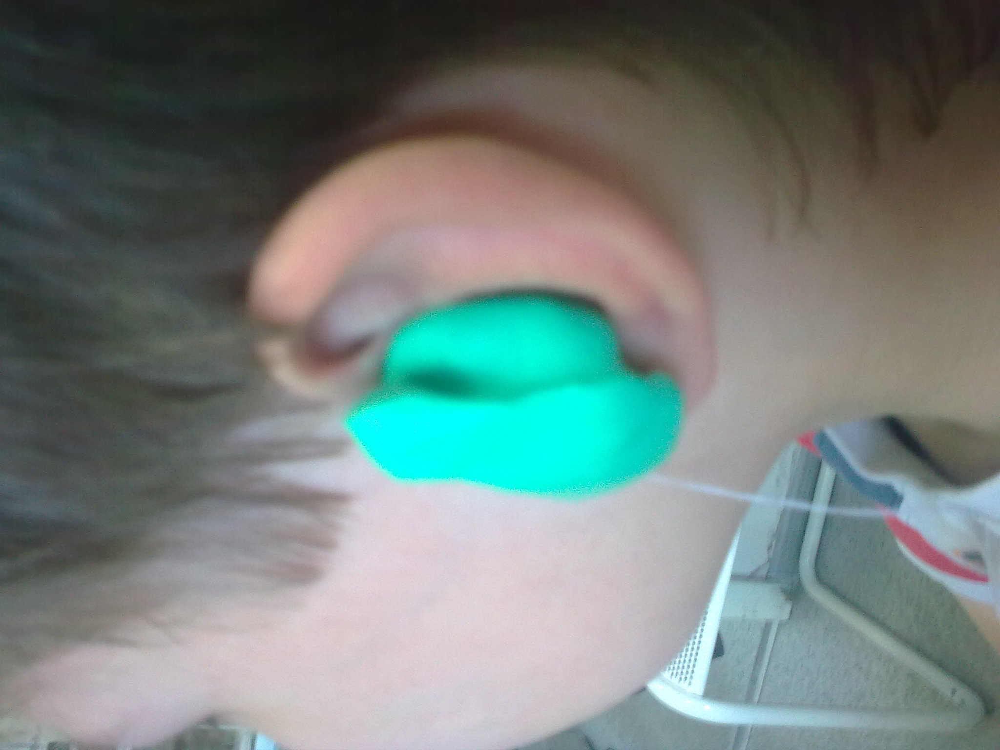
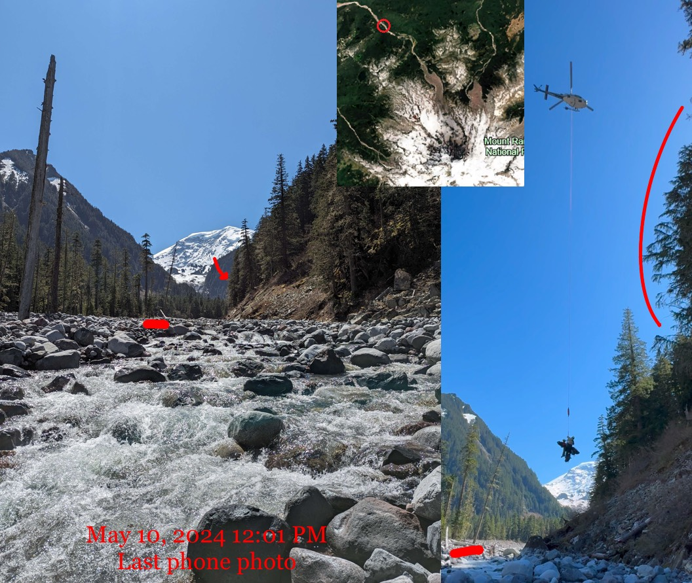
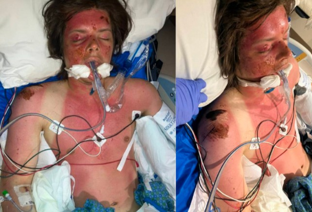
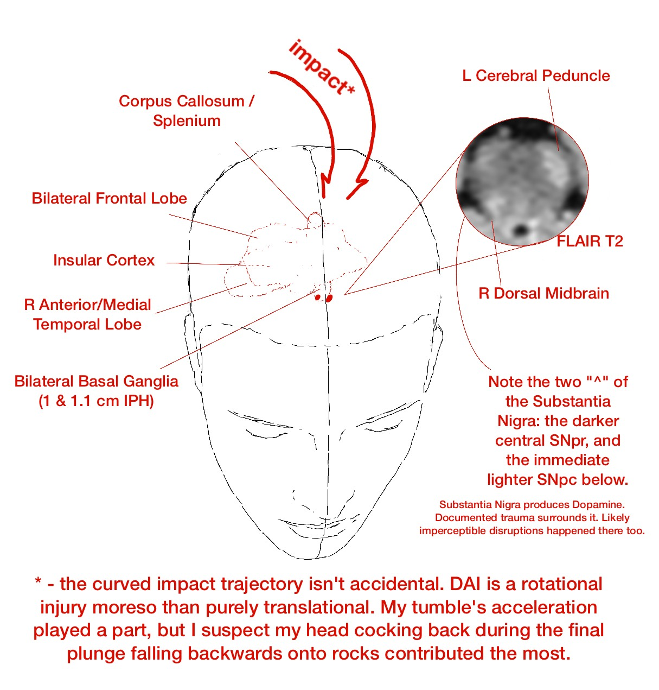

Disabilities
Here’s to a very costly but stupendously effective pre-hab of a significant trauma.
- 1. Sudden Bilateral SNHL
- 2. Critical Polytrauma (image spoilered) - Difficult Read
- 3. Improvement under a Grade 3 DAI
Sudden Bilateral SNHL
November 2009, aged 10 in Siberia, I went to bed hearing, and woke up: the bedsheets don’t rustle, the birds don’t chirp outside, or my scared howl for my parents doesn’t register. I suffered an unexplained 70-80 dB hearing loss in both ears (I was a soloist in a choir and was in a music school studying fortepiano). I spent more than a week living in a hospital and an explanation wasn’t found. Auditory Clinics had nothing. Just, Sudden Sensorineural Hearing Loss of 70-80 dB, worst at the speech frequencies. My family, entirely hearing, quickly got me a pair of well-made Phonaks. I didn’t learn RSL (or ASL) and struggled on.

Hearing is a vital part of communication, education, and overall development. I went from winning every early olympiad (Russian, English, Mathematics, Literature) to struggling with assignments. My mind was pre-occupied with my disability. After 6th grade, while I passed selective testing and enrolled into an official preparatory course for ЛСОП ФМШ при СУНЦ НГУ for future enrollment into ФМШ (Top 5 Ru school, explicit preparation for international olympiads); my recent severe hearing loss diluted my focus – the pace there does not forgive distractions – lacking. Just two months later, my family of 5 moved from Siberia to Seattle.
I was given the choice to stay behind, as I was already somewhat old (13). I moved. My English vocabulary was great having spent 7 years taking extensive private English lessons. But it’s not easy to be a teenager where you cannot audibly understand other kids or teachers. Interpersonal communication is important for human beings, and that was lacking. While I easily passed Written English tests (or less stellarly, Speaking English tests) – I could not, for the life of me, pass Listening English tests. The school(s) made no circumstantial adjustments and I was stuck in an English Language Learners class for years. How do you develop interests and hobbies if you cannot converse and learn from others? Teenagers are ruthless – whether mockery, dismissal, or overbearing pity. None are great for a curious, developing mind.
So I barely graduated from High School, got into a satellite campus of University of Washington, and promptly dropped out within the first quarter. I spent three years (coinciding with the pandemic) not doing much, just some nighttime labor (even at the entry level, a customer-facing position was nearly impossible, managerial duties a pipe dream). In September 2021, I returned to a Community College. My grades were high, I retook the SAT and got a 1520/1600 compared to the 1390 I got 4 years ago in HS (+100/170 engl, +30/40 math); within a year I was directly transferring into the Economics program of University of Washington, Seattle.
Still, the problem of hearing remained and was much more accentuated in a huge city university compared to a small community college. Abstractly, communication breeds motivation. In life, if you aren’t motivated to succeed, you get left behind. And every passing conversation, every auditory stimuli, every engaged tone, nevermind cooperative studying – they subtly nudge you to be better. Podcasts and audio recordings; every remark that was judged to not be included in the slides but said audibly – what a joke. I lacked this motivation, and it spills into attendance, work, effort; into everything. While I discovered and was the only UW undergrad barging into PhD seminars in Micro, Macro, Dev. Econ and Econometrics (23 total), I struggled to anchor my hearing motivation, e.g., to pass a Real Analysis course.
So, my (and any HoH, d, D person) extrinsic motivation is restrained via the auditory dimension. However, a restrained person might have more avenues for intrinsic motivation:
Critical Polytrauma (image spoilered) - Difficult Read
May 2024, I was 24. I went on a Mt. Rainier National Park hike by myself, planning to approach NW’s Carbon Glacier and return to my Russian-speaking community theatre rehearsal in the evening – which I never did – alerting my family. I have a four-week memory gap: one week before is very iffy and three weeks after are completely blank (even while I was semi-conscious).
Matching the last phone photo and ranger reports, both featuring a unique landmark: Friday (5/10), 12:30 PM I tumbled 40 ft down a riverbank, offtrail, headfirst on rocks. Imprints of extremities were left on the riverbank. Saturday (5/11), 12:30 PM a rescue park ranger stumbled across my body. The weather was great, it was sunny (ok, it was a solar storm), and I was shirtless. Swollen, with 2nd-degree sunburns, all while “decorticate posturing” (arms flexioned towards chest, legs straight - a signal of deep disruption in brain-body communication). My right hearing aid broke on impact. I was alive.

The EMS were called, a helicopter arrived and hovered; I was intubated. My Glasgow Coma Scale (3-15) was 5 (measures Eye, Verbal, Motor response ability; E1V2M2). L pupil size was unreactive to light. Saturday, 4:26 PM reports started at Harborview Medical Center in Seattle. Meaning I spent the first 24 hours alone, then 4 more hours with very limited care in the wild.
So, my lung was lacerated on impact and I developed Pneumonia. My muscles broke down and I had Rhabdomyolisis. I aggressively consumed myself for energy and had Ketoacidosis1. Beyond these systemic secondary insults developed while I “enjoyed” the mountains, my Right palm was profoundly fractured – think shattered – breaking the fall (but my head lived), my Right Lumbar was fractured, my face suffered some closed fractures, and my Right shoulder ground against rocks and had soft tissue damage; whole body scarring exists in multiple locations. This doesn’t discuss the secondary brain injury metabolic cascade.

The mechanical closed impact landed front-center (biasing the right side) near the top of my head and traveled deep into my brain; the documented micro-shearing reached the brainstem. This is called a Grade 3 Diffuse Axonal Injury. I provide more details in the next section, Improvement under a Grade 3 DAI, as reported by imaging.
Camino was removed 25 hours into stay, extubated 71 hours in (GCS 13 already, V lowest), was conscious and stable enough to be transferred to Acute Care on day 4, Internal Medicine on day 8, Rehab on day 20, and was sent home on day 27… This timeline doesn’t count the first ~24 hours in the elements and is *highly, highly, highly improbable*. I am not exaggerating. Also, I am fortunate my polytrauma wasn’t in any serious way open.
This shouldn’t be - even remotely - used as a reference. This is a z=3+ outcome while 1) conditioning including DAI 2 (I have talked to such survivors) too, 2) generously discounting the entire “lost in the wilderness, delayed care” fiasco. HOWEVER, if the reader is driven to understand the philosophy of the human mind (for brutally practical or blissfully abstract reasons), then my attempts to convey whatever’s in my head are on this website for your use.
2024:
May 10 - fell 40 ft in Mt. Rainier wilderness.
May 11 - found 24 hours later. Intubated E1V2M2, Harborview Neuro ICU, L pupil size unreactive. Estimate: unsure if will live.
May 12 - localizes upper extremities pain, only withdraws lower extremities. Good sign consciousness might be regained.
May 13 - camino removed, MRI confirms Grade 3 DAI.
May 14 - extubated, some consciousness (3 days – usually 1-2 months, :-( if ever).
May 15 - General Care: Acute Care, stable.
May 16 - recognizing, mumbly responding, asking simple q’s (where is dad, what happened to R hand), weakly smiling in response (only L side).
May 17, 18 - practicing skills such as upright posture.
May 19 - General Care: Internal Medicine. NSGY unofficial estimate: 3 months.
May 20, 21 - BTW, that May 16 smile was largely a one off; I was a robot. No affect except when inconvenienced.
May 22 - overnight pulled out the feeding tube from my nose. Passed tests, started eating puree. Estimate: 20 days til solid foods.
May 23, 24, 25, 26, 27 - walk in room, in corridor, across the Harborview skybridge, brushing teeth, full meal consumption.
May 28 - delirium restlessness overnight. Pivotally important.2
May 29, 30 - reading Percy Jackson, solving crosswords - several hours. Estimate: multiple medical staff recommend rehabilitation.
May 31 - Rehabilitation, memory largely returns (the only earlier memory is the “eurgh!!!” of the feeding tube in nose – PTSD).
June 1, 2, 3, 4, 5 - OT, ST, PT. Three 1 hour sessions daily. Moved on from soft foods June 4.
June 6 - discharged home. Discharge moved up several days over the course of rehabilitation. The day I relearned bathroom I was sent home.
Improvement under a Grade 3 DAI
Much can be reducible in human experience.
(Much does not imply all. Abstract ideas such as will, consciousness, emotion feel incomplete.)
[Note: I’m OK, I returned to UW-Seattle 4 months after, graduated without delays 13 months after, deadlifted 180 kg in competition 14 months after a DAI 3 – about 30 kg heavier than my pre-injury max, so improvement rather than return to a baseline.]
Walking isn’t trivial; talking isn’t trivial; object permanence isn’t trivial. All three in conjunction with each other are a HUGE task: having a walk with someone, looking sideways at them and conversing on the move, while being confident in your awareness of/response to the road features. To turn your head - you stop; to talk - you stop; words escape you. It’s not trivial to remember your mother sitting across the table while you are eating.
The previous paragraph is broadly “woah…” understood by a “regular” person. TBIs are unique in pathology AND in rehabilitation/lack of. Survivors present with numerous other nebulous and quirky challenges: sensory sensitivity, temporal attentiveness, aphasia, amnesia, motor procedures, localized and general fatigue, selective retrieval are some other points frequently made.
I haven’t even begun discussing the abstract stuff: ability to predict, ability to empathize, ability to detect lies, and to lie yourself. All four originate from and can be trained by the same idea: perhaps I should publish some intuitions on that.
Working memory capacity, internalization of experiences, memory sequencing, broader emotional regulation, and contextualization of memories and speech.

Damage was done to my dopaminergic structures – responsible for rewards (learning) and for Salience – a big puzzle is how to prompt myself to act in lieu of proper dopamine utilization. How do I prompt myself to form memories…? (i.e., what neuromodulator do you think the Hippocampus uses…?) How do I prompt action? How do I do the procedure of action? Analogously, procedures are action chains – how do I go through these chains smoothly, with no discrete jolts? I seem to stare without initiating a verbalized thought, and then I seem to stare without transferring the thought into writing, into speech, into movement. Etc, etc, etc. How do you improve here?
When you turn off and stop (a healthy reader is unlikely to truly understand this), are you conscious? How do you reduce the incidence?
Summarily, what do you do when your actions lack velocity? (vector of speed and direction)
These are some philosophical, physical, and cognitive questions I grapple with.
Extremely successfully.
I pray (and I’m not even religious!) such a neurological trauma does NOT happen to you or to the people you care about. It is a devastating condition and I urge you to NOT use this vulnerable but overall very positive first-person discussion to downplay DAI or TBIs in general.
Near complete sensory loss is also awful, and unlike TBI – which ebbs and flows – it is always constant in its "grim reminder".
Thank you for visiting my site.
— dvp, 2026
Footnotes
Euglycemic/Starvation Ketoacidosis might have been a needed defensive mechanism. Intuition: when neuronal structures popped apart (some instantly, some in hours-days that followed), they flooded the brain with ions, etc. Energy (glucose/atp) went into restoration overdrive, and utilization of alternative energy sources was welcome. I am not a chemist. Keywords would be: “ketones and brain injury”. FWIW, this is about the “extreme” (where my organism efficiently entered and exited ketone use). I value carbs in baseline function in strongest terms possible. You can find compromised info online that generalizes and makes unsupported claims that complete glucose avoidance helps the brain - wrong. Though, more glucose should always be followed with more cognitive or physical activity. Do not let your cells develop insulin resistance.↩︎
Full Care Timeline: the first part of my first, clumsy essay, Induction, Metaphysical Fears, and the Gradient of Reality, discusses why delirium was important.↩︎